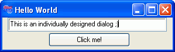

Implementing user-defined dialog windows
With RapidBATCH 5, implementing user-defined dialog windows is now possible for the first time! RapidBATCH uses a simple, but very efficient, elaborated and easy to use system, making it possibile to create dialog window elements and change and read out their behavior, appeareance and contents.
With only five different instructions and functions, you're able to develop and design completely individual Windows-applications of any kind by yourself!
When implementing own dialogs using the RapidBATCH scripting platform, you have to implement your applications by following these four steps: - Creating the dialog widgets
- Setting up the dialog widget's attributes and behavior
- Making the dialog window visible
- Runing the dialog, react on events
The following script does exactly these four steps. It creates a dialog with an input-field and a button. If the user clicks the button, the text, that was inserted into the input-field, is displayed in a messagebox.
rem creating the dialog widgets
newdialog 'myDialog', 'DIALOG', '1|1|300|80'
newdialog 'myDialog:Input', 'INPUT', '10|1|273|25'
newdialog 'myDialog:Go', 'BUTTON', '80|27|140|25'
rem setting up the dialog widget's attributes and behavior
letdialog 'myDialog', 'CAPTION', 'Hello World'
letdialog 'myDialog:Input', 'TEXT', 'This is a text you can edit!'
letdialog 'myDialog:Go', 'CAPTION', 'Click me!'
rem make the dialog window visible
letdialog 'myDialog', 'VISIBLE', [true]
repeat
rem run the dialog
rundialog [event] = '0'
rem evaluate the event
if [event] = 'click_myDialog:Go'
rem get the text from the input field
getdialog [text] = 'myDialog:Input', 'TEXT'
echo 'The value in the input field is: ' # [text]
endif
until [event] = 'close_myDialog'
end

Script with an individually designed dialog window
I will now introduce you step-by-step into this world of the nearly unlimited possibilites, because this new, very effective feature lifts RapidBATCH up to a powerful, high-level Windows programming language enabling you to build and develop your own user interfaces and powerful software-applications for the Windows® operating system.To create widgets, the instruction NEWDIALOG is used. As it appears in the above example, NEWDIALOG expects as parameter values a so called widget-label, which can be seen as a "name" for the window object. This label must be unique, it is not possible to manage different widgets under the same label. Next to the widget-label, NEWDIALOG expects the type of the widget that should be created, for example a dialog, an input-field or a button, etc.. As the third parameter, the coordinates where the widget should be placed at, is specified. These coordinates, in pixels, are specified in the format "X-Position|Y-Position|Width|Height", where each coordinate is separated by the standard list separation character (by default, the pipe-character, "|"):
With the line
newdialog 'myDialog', 'DIALOG', '1|1|300|80'
from our example-script, we're creating a new widget of the type "DIALOG" (which defines a dialog-basic window) with a width of 300 pixels and a height of 80 pixels, that is placed in the upper-left corner of the screen (X- and Y-coordinates 1|1). This dialog-window is associated with the name "myDialog", to access it for later purposes.
The following, two NEWDIALOG-instructions
newdialog 'myDialog:Input', 'INPUT', '10|1|273|25'
newdialog 'myDialog:Go', 'BUTTON', '80|27|140|25'
are creating a single-line input-field (widget-type: "INPUT") and a button (widget-type: "BUTTON") on the dialog window "myDialog". That these elements are placed and hold on the dialog-window "myDialog" can be seen on the prefixed "myDialog:"; The colon (:) advises RapidBATCH to create the widget as a child-element of "myDialog". The widget will be created and associated with this label, for example "myDialog:Input", that means that the parent window identifier "myDialog", seperated by the colon from the proper widget name, "Input", are building the unique labeling of the child-widget.
The pixel positions that are specified at the child-elements being created are relative to the parent window, that means the objects are located on the specified coordinates, where position 1|1 is the upper-left corner of the parent-dialog's client area. Only the parent-dialog itself is located on the screen via screen-coordinates.
After creating the widgets now, different values are set to them. In our case, the parent-dialog's caption is getting the caption "Hello World" in its title bar, the button gets the caption "Click me!" and the input-field gets the text "This is a text you can edit!".
rem setting up the dialog widget's attributes and behavior
letdialog 'myDialog', 'CAPTION', 'Hello World'
letdialog 'myDialog:Input', 'TEXT', 'This is a text you can edit!'
letdialog 'myDialog:Go', 'CAPTION', 'Click me!'
Each value is set using the LETDIALOG-instruction. LETDIALOG expects as parameter values the target widget's identifying label, the attribute-identifier of the attribute that should be changed or set-up and at least the related value. This last parameter sometimes must be specified in a formatted order which is based on the attribute that is specified.
The attribute identifier "CAPTION" sets the labeling of a widget, for example the dialog-window's title bar or the text displayed on the button. "TEXT" is used to set the text of an "INPUT", "EDIT", or "COMBO"-typed widget. Which attributes a widget provides is different from widget to widget. There is no widget supporting all attributes that are possible, e.g. a listbox has no caption, but a button having a caption can not store or display a list of items, which is the case at the listbox. More of these attributes will be discussed later.
At least, by using the line
letdialog 'myDialog', 'VISIBLE', [true]
the parent-dialog widget is made visible, by setting the VISIBLE-attribute of the dialog to [true] or '0'.
Only at parent-dialog widgets, the VISIBLE-attribute is set to '-1' or [false] (which means: Not visible) by default, when they are created. Child-widgets are automatically set to visible when they are created with NEWDIALOG. The reason for this is, that it is recommended to first create all dialog widgets and then make the parent-widget, which is the dialog-window itself, visible. If you make the dialog immediatelly visible after its creation, there may be a short flickering for some milliseconds when the other widgets are created on your dialog, and this does not look that nice. On smaller dialogs, this phenomen will not appear, but if you create greater dialogs, maybe based on dynamic data, this possibility is advantageous. You should always perform this, even more professional way.When all widget creations and their attribute-settings are done, the RapidBATCH-script calls the so called RUNDIALOG-function. This function starts an internal waiting loop that is executed until the user initiates a so called event with the existing dialog child-widgets or the dialog-window itself.
rundialog [event] = '0'
When this line is executed, the dialog can be used. When the user hits, for example, the button on our dialog, the function generates and returns a so called event-string, that is formatted in the order "Event_Widget-IdentLabel". So if the user hits the "Click me!" button in our above example, RUNDIALOG returns the event-string "click_myDialog:Go".
The numerical parameter that is specified at RUNDIALOG is an optional timeout value. If this value is set to '0' or a negative value, RUNDIALOG has no timeout and waits, until an event is initiated by the user (like in our current example). If this timeout is specified, e.g. the value '10000' (a timeout of 10 seconds), RUNDIALOG will wait for events only for these 10 seconds. If the user clicks the button within this time, an event-string is returned by RUNDIALOG, if nothing happens and the timeout is reached, RUNDIALOG returns an empty-string and continues the script execution.
In the following IF-block, our script checks if the button was pressed, by comparing the event-string returned by RUNDIALOG with the constant verification string "click_myDialog:Go". If this condition results true, the text from the input-field is determined, using the GETDIALOG-function, and displayed to the user over an ECHO-messagebox.repeat
rem run the dialog
rundialog [event] = '0'
rem evaluate the event
if [event] = 'click_myDialog:Go'
rem get the text from the input field
getdialog [text] = 'myDialog:Input', 'TEXT'
echo 'The value in the input field is: ' # [text]
endif
until [event] = 'close_myDialog'
GETDIALOG is the opposite of LETDIALOG. It does not set a widget's attribut, but reads it out and returns it. GETDIALOG expects the widget's label that should be read and the particular attribute. The return string is (not in all, but in the most cases) the same as specified at LETDIALOG.
Now, I think you had understood the basics of individual, user-defined dialog creation in RapidBATCH. The concept RapidBATCH uses is very simple, but also very dynamic together. You can create a dynamic number of widgets and evenly work with them. In the next chapter, the different widgets RapidBATCH provides to create your individual dialog windows are discussed more detailed.
The best way to get familar with these new possibilities, take a look to the numerous example scripts the RapidBATCH scripting package comes with, using user-defined dialogs and interfaces.
Copyright © 2000-2006 by J.M.K S.F. Software Technologies, Jan Max Meyer
All rights reserved.